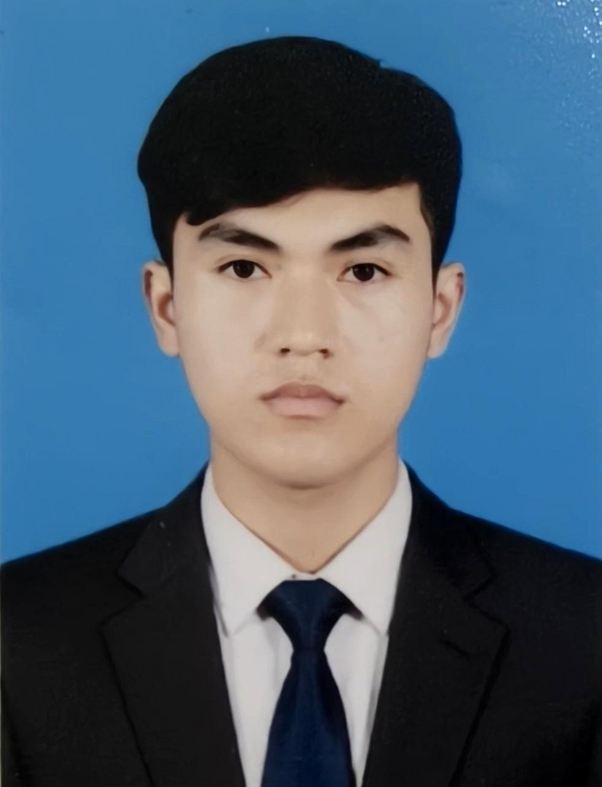

SOVATH PHIN
IT Support
Address: St. 265, Phnom Penh
(+855) 887176988
sovath0304@gmail.com
|

|
Skills
- Operating Systems: Basic Windows OS Setup & Maintenance
- Networking: Basic LAN Setup & Configuration
- Troubleshooting: Basic Hardware & Software Troubleshooting
- Office Tools: Microsoft Word, Microsoft Excel, PowerPoint
Education
Royal University of Phnom Penh — Bachelor's Degree
2024 – 2028
- Studied core computer science subjects including programming, networking, and database systems
- Developed foundational knowledge in software development and IT systems
- Gained introductory exposure to LAN networking and Windows OS setup through classroom lab sessions
Experience
Royal University of Phnom Penh — University IT Lab Project
2025 – 2026
- Participated in a classroom-based lab project focused on basic networking and system setup.
- Assisted in configuring a small local network (LAN) and setting up Windows OS on lab computers.
- Practiced basic troubleshooting techniques on university lab equipment.
Skills used: Windows OS Setup, LAN Configuration, Hardware & Software Troubleshooting